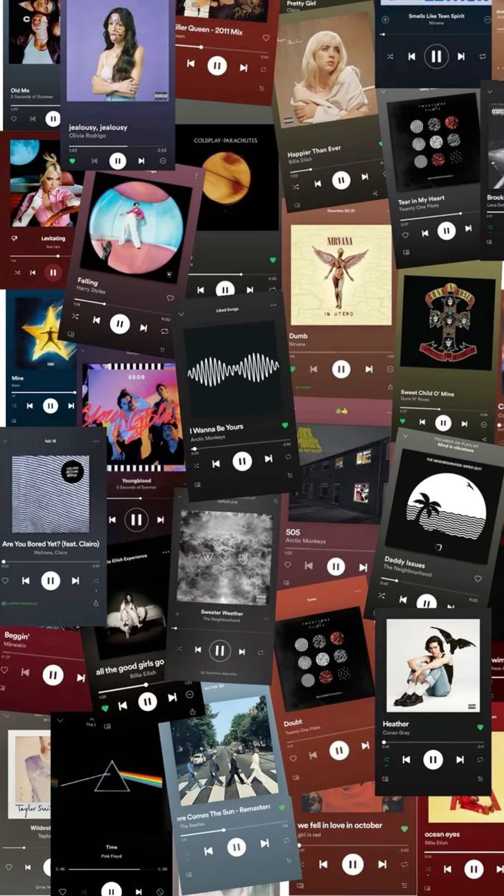
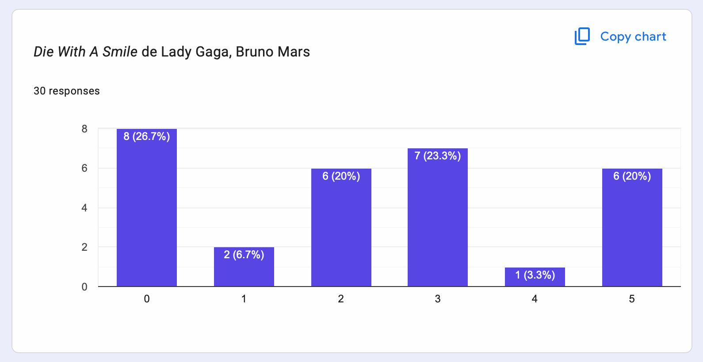
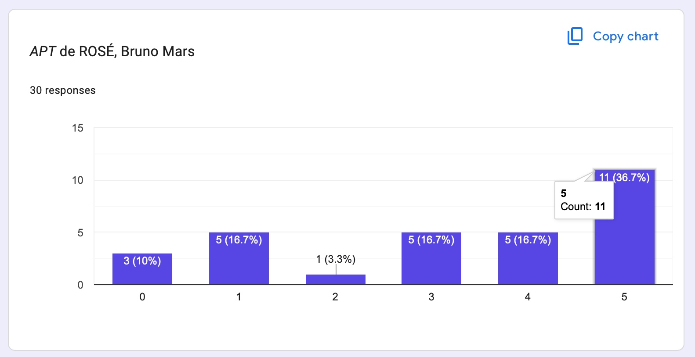
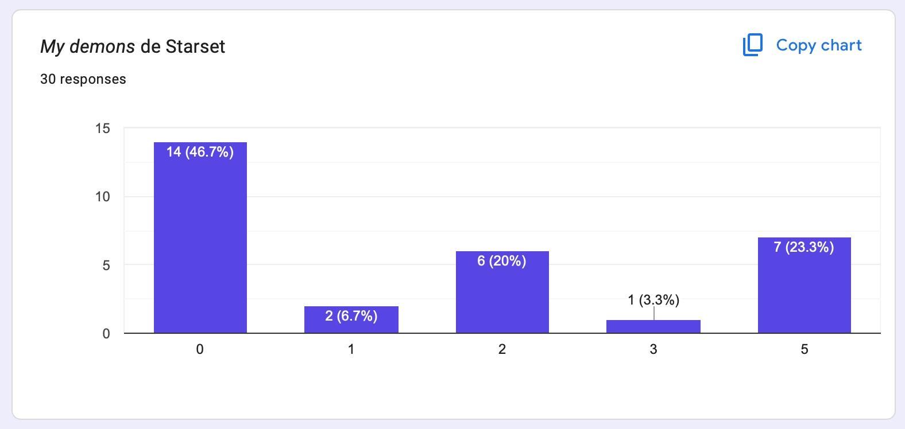
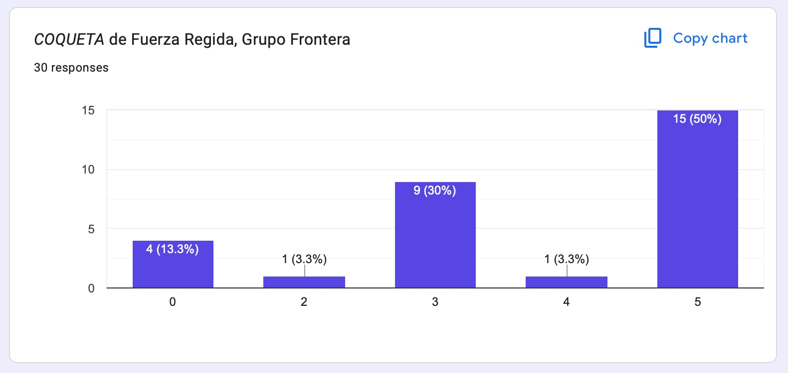
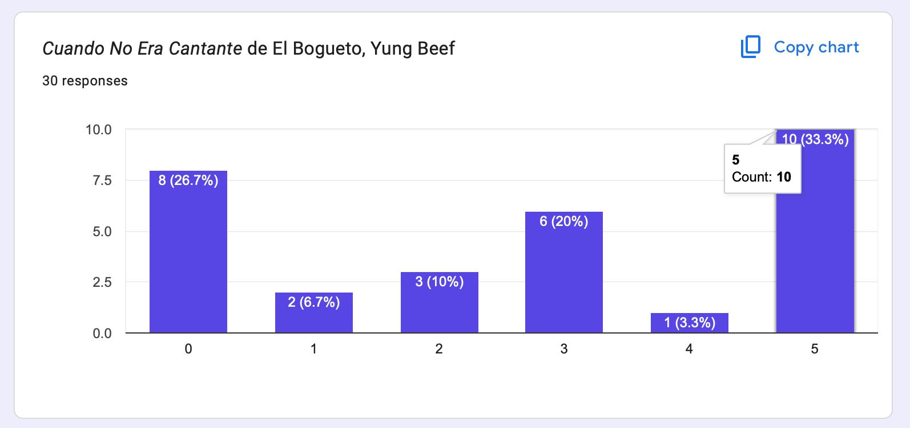
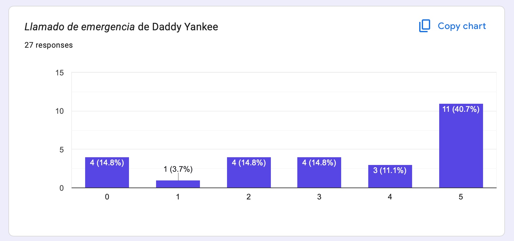
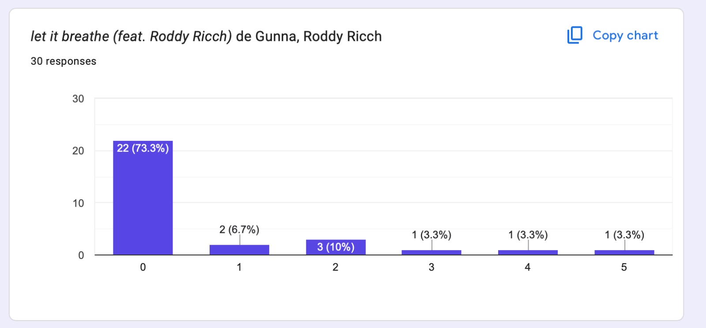

Base de datos y evidencia
Consulta la preparación de los datos, la exploración de las respuestas, las gráficas y los resultados obtenidos durante el análisis.
Ver base de datosLo que dice la gente
No todo lo más conocido es lo más querido. Esta página presenta los resultados de una encuesta sobre preferencias musicales en jóvenes universitarios. Explora cuáles canciones fueron más reconocidas, cuáles gustaron más y cómo cambian las opiniones según género, región y perfil musical.
Explora los resultados
A través de un formulario en Google Forms, se recopilaron respuestas sobre canciones de distintos géneros. El análisis permite entender cómo se relacionan la popularidad, la valoración y las diferencias entre distintos perfiles de oyentes.
Resultado
Desarrollo del proyecto
En estos apartados se puede revisar el análisis de la base de datos y el procedimiento utilizado para generar las recomendaciones musicales.
Consulta la preparación de los datos, la exploración de las respuestas, las gráficas y los resultados obtenidos durante el análisis.
Ver base de datosRevisa el procedimiento utilizado para comparar usuarios y generar recomendaciones personalizadas de canciones.
Ver recomendadorEstética musical
La música también se vive visualmente. Por eso esta página combina una estética inspirada en collages de canciones, portadas de álbumes y recuerdos personales, para representar cómo cada canción puede conectar con una emoción distinta.

Una canción puede ser muy reconocida sin ser la favorita de todos.
Las canciones clásicas sorprendieron con algunos de los puntajes más altos.
La exposición no siempre significa preferencia musical.
Análisis visual
A continuación se muestran las gráficas generadas a partir de la encuesta.






